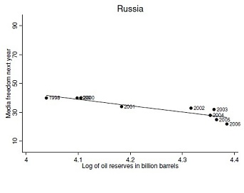
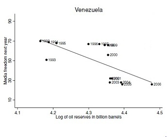
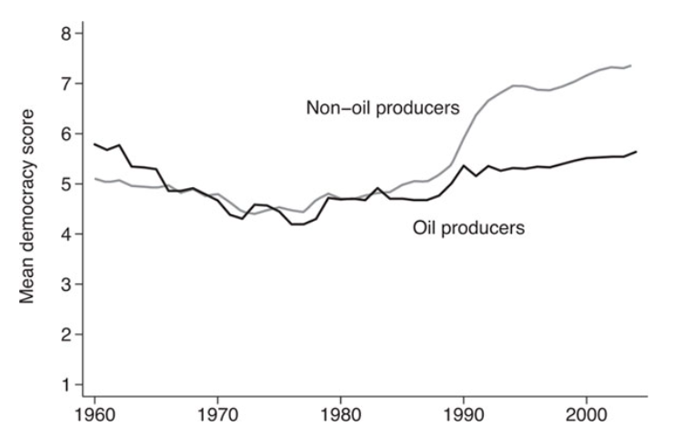

Nigeria has a term limit for its presidents – two four-year terms. Obasanjo, who took over as the President in 1999, investigated human rights abuses by the military, releasing political prisoners and even making a real attempt at rooting out corruption. All this happened when the price of oil was 25$ per barrel. When oil reached a price of 60$ per barrel though, rumours of him trying to amend the constitution to serve a third term began to swirl, amid others involving him in nefarious $1million bribes. Is this mere happenstance or is political freedom tied to the global price of oil?
One might expect an abundance of marketable, commercially viable resources to be a blessing for any nation’s future growth. But, this is not always the case. A bountiful supply of natural resources, especially oil, can also prove to be detrimental to a country’s economic and political freedom, especially if its political circumstances are far from propitious to organic growth. Oil does not feature very often in an ordinary citizen’s train of thought, except when it comes to transportation costs of course, which are almost entirely dependent on oil. But, the effects of the price of oil stretch across a vast number of fronts, with volatility in prices possibly affecting the socio-political realm.
In this article, we show you how the price and abundance of oil might have a strong correlation with the sustainability of political and economic freedoms in countries, especially the oil-rich dictatorships.
How oil wealth impedes democracy?
According to Michael L. Ross, Professor of Political Science at UCLA, oil wealth can impede democracy by four different mechanisms:
1. The taxation effect:
After nationalization of oil companies, oil-rich states no longer have to tax private oil companies for revenue. Instead, they are free to earn more by producing more oil whenever they please. As the revenue rises, governments can reduce taxes on the citizens, making governance easier and the ruling government more politically popular. What this leads to though, is the government becoming overly dependent on oil revenue and neglecting other streams of income. A study on thirty-one hydrocarbon-rich countries showed that on average, although the oil companies make of 19 percent of the economy, they are the source for 54 percent of the state’s budget.
2. The spending effect:
With government revenues on the rise, the Government would tend to indulge in greater patronage spending, by increasing government subsidies. Nationalism, being easier on a full stomach, helps the country buy opposition loyalties. In 2006, Iranian President Ahmadinejad promised to build 300,000 housing units and maintained energy subsidies amounting to 10% of the country’s GDP. These grants can be economically wasteful, not to mention environmentally disastrous.
3. The repression effect:
An overabundance of oil revenues allows governments to spend excessively on internal security and intelligence forces, which can then be used to strike down upon democratic movements. The newfound wealth can also be used to prevent independent social groups from forming, thus curbing free thought.
4. Modernization effect:
A massive influx of oil wealth can diminish the immediate social pressures for occupational specialization, urbanization and the securing of higher levels of education, which are trends that one would normally associate with the broad development of the economy.
The inverse relationship
The relationship between the price of oil and freedom in non-democratic regimes was well characterized by three-time Pulitzer Prize winner Thomas L. Friedman as the “First Law of Petropolitics”.
“The price of oil and the pace of freedom always move in opposite
directions in oil-rich non-democratic states”
The higher the price of crude oil, the more free speech, free press, free and fair elections are eroded. Conversely, the lower the price of oil, the more are these countries forced to start indulging in dialogue about gravitating toward a political system and a society that is more transparent. There is more focus on uplifting legal and educational structures that will provide a suitable environment conducive to maximizing their citizens’ abilities. Subsequently, the media is given a fair share of freedom to ensure monitoring and criticism from an outside source.
Estimated chance of survival of a dictatorship
A marked difference: $20 vs $60
A shining example of how the entire dynamic in an authoritarian state changes with fluctuating oil prices can be seen by comparing the situation in the Soviet Union under its leader Mikhail Gorbachev and Russia under Putin, when the prices of oil were $20 and $60 respectively.
A surge in the budget deficit caused by a sharp fall of 58% in oil prices in 1985 was a clear indication that the economy that was once at par with The United States, was in dire need of restructuring. Consequently, in 1987, Gorbachev introduced two reforms : glasnost and perestroika. Glasnost gave the citizens a greater freedom of speech and opened the Government to criticism. Perestroika referred to the restructuring of the economy, by introducing policies allowing the ownership of private property, along with enabling foreigners to invest in the form of joint ventures with Soviet ministries. Contrast this with Putin’s Russia when oil was at $60 a barrel, where he used his oil windfall gain to nationalize Gazprom, a massive oil company. Media outlets and several other previously independent institutions were also brought in under the government’s jurisdiction.
  A plot depicting how the estimated media freedom falls with increase in discovery of
new oil reserves in non-democratic regimes such as Russia and Venezuela
A worrisome feature of oil wealth is that it skews how development is perceived within the country. When the citizens are poor and the wealth is concentrated in a few hands, they begin to question why the oil wealth isn’t trickling down to them, rather than questioning the appalling existing developmental structures such as education, innovation, rule of law and entrepreneurship.
The Dutch Disease
In what way can an abundant supply of natural resources prove to be more of a stumbling block to organic growth, contrary to what one might expect?
The Dutch disease or “resource curse” refers to the period where large gas reserves had been discovered in Netherlands in 1959. Exports soared, but led to a rise in unemployment during the same period. This was later attributed to the increase in value of the Dutch currency, the guilder. Gas exports led to a rise in foreign reserves and therefore gave rise to an increase in demand for the guilder, making it stronger. This made the other parts of the economy, previously having the makings of a well-oiled machine, less competitive in international markets. An attempt by the Dutch Government to curb the rapid increment in the value of the guilder was made, by keeping the domestic interest rates low, but this further exacerbated its woes, by rushing foreign investment out of the country, with investors looking for a better return on their capital, crippling its future economic potential.
The Middle Eastern Crisis
The most troubling effects of the Dutch disease are found in the present-day Middle-East. This region holds more than half the world’s proven oil reserves. It also, not coincidentally, lags far behind the rest of the world in progress toward democracy, gender equality and economic reforms. The region’s maladies are often cited as being due to its Islamic traditions, or colonial heritage. In fact, oil-wealth is at the root of most of the Middle East’s social and political “diseases” and present challenges for the region’s democratic reformers. It is not a sheer coincidence that more than half the world’s oil reserves lie in non-democratic states. Rather, democratization and the presence of oil-reserves share a causal relationship. It is due to the presence of the large, untapped sources of immense wealth that these nations have managed to shield themselves from the sweeping wave of democratization.
It is therefore no surprise, that in January 2011, pro-democracy protests broke out across the entirety of the Middle East, widely known as the Arab Spring. Although protesters took to the streets in almost every Arab country, they found it much easier to overthrow rulers in oil-poor countries, like Tunisia and Egypt, than incumbents in oil-rich states, like Libya and Saudi Arabia.
We see that oil producing countries tend to have a lower democratic score when the oil prices are low.
Bahrain : Dust turned into gold
When a country doesn’t just have to dig up another oil well for money, it begins to think about diversifying the economy and encouraging private enterprises. Such is the case with Bahrain. Upon realizing that the country had a limited source of oil wealth, Bahrain embraced economic liberalization, diversifying its economy into banking, retail and tourism. The country has used its windfall gain from its oil wealth to invest in infrastructure development and other projects, along with education, health, water and roads. It has an impressive track record of being the most open economy in the Middle East, while enjoying a robust pace of growth. International events such as hosting the Grand Prix have caused major airlines such as Lufthansa to continue services in the country, contributing to bringing it into the limelight as a country that has truly embraced economic liberalization.
We can therefore come to a logical conclusion, that, commodity-rich countries would be far better off using their fortunes to diversify the economy, or better yet, investing in foundational pillars of any country’s growth, such as better education. This would ensure that not everything revolves around who controls the commodity. An environment conducive to growth would be created, with competition and innovation, leading to a production of real goods, for real markets.
Sources
- Oil and the Duration of Dictatorships - Jesus Crespo Cuaresma
- Why Resource Poor Governments Allow Freer Media - Georgy Egorov, Sergei Guriev The Oil Curse:- How petroleum wealth shapes the development of nations by Michael L.Ross The First Law of Petropolitics – Thomas L. Friedman
- Why resource poor dictators allow freer Media: - Georgy Egorov, Sergei Guriev
Shubhra Agrawal